Connect to your cloud server with SSH for this exercise.
Deploy a multi-component web application with nginx
The goal of this exercise is to understand the challenges of deploying a web application made of several components, developed separately, and how a reverse proxy like nginx can make them appear as a single website.
This guide assumes that you have completed the nginx reverse proxy
exercise: nginx is installed and running on your
server, and your wildcard DNS record points every name under your hostname
(*.jde.archidepN.ch in this guide) to it.
On this page
Table of contents
 Legend
Legend
Parts of this exercise are annotated with the following icons:
-
 A task you MUST perform to complete the exercise
A task you MUST perform to complete the exercise
-
 Optional step that you may perform to make sure that
everything is working correctly, or to set up additional tools that are not required but can
help you, or optional extra exercises to explore the topic further
Optional step that you may perform to make sure that
everything is working correctly, or to set up additional tools that are not required but can
help you, or optional extra exercises to explore the topic further
-
 Advanced tips on how to go further (or
challenges!)
Advanced tips on how to go further (or
challenges!)
 The end of the exercise
The end of the exercise-
 The architecture of the software you ran or
deployed during this exercise
The architecture of the software you ran or
deployed during this exercise
-
 Troubleshooting tips: how to fix common problems you might
encounter
Troubleshooting tips: how to fix common problems you might
encounter
Meet The Revolutionary Product
The application you will deploy is Revprod, the website of The Revolutionary Product, which you can visit at revprod.archidep.ch. It presents the product, and lets customers share testimonials about it. Share a testimonial, and go back and forth between the home page and the form: it looks like one website.
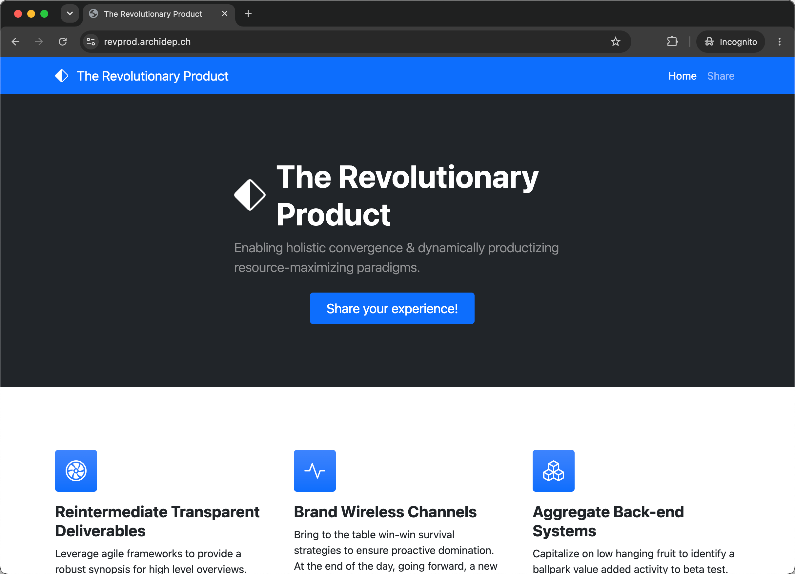
Imagine that Revprod is a large application, too large for one team. Its development is split between two teams, each responsible for one component:
- The landing page team builds the main page, which presents the product and displays the customers’ testimonials. This team writes Python.
- The backend team builds the form where customers share their testimonials, and stores them in the database. This team writes JavaScript, run by Node.js.
The two teams have agreed on two things: the same visual theme, so that a customer does not notice going from one component to the other, and links between the components. The landing page links to the backend’s form, and displays the testimonials the backend has stored. The backend’s pages link back to the landing page.
Revprod is split for the purposes of this exercise, but large applications are often split like this for various reasons.
Some advantages of a multi-component application are:
- Each component could be developed by a separate team, using their favorite programming language and tools.
- Each team could deploy new versions of their component independently.
The disadvantages are:
- It is more complex to manage the development and deployment of a multi-component application.
- Separate teams working together must agree on how the components communicate, and not break that agreement.
- On the deployment side, you have to make sure that you always deploy compatible versions of all components together.
Requirements
The backend needs Node.js 26, which you installed in the SFTP exercise. The landing page needs Python 3.12 or later, and uses only Python’s standard library: Ubuntu comes with Python, so there is nothing to install. Check both:
$> node --version
v26.13.1
$> python3 --version
Python 3.14.0Your versions may be slightly different, but Node.js must be version 26, and Python 3.12 or later.
Deploy the backend
You will deploy the backend first, the same way you deployed Guess It: clone its
repository into /srv, create a user to run it, and run it with systemd.
Clone the backend
As you did for Guess It in the Git clone deployment,
create a directory for the backend in /srv, give it to yourself, and clone the
backend’s repository into it:
$> sudo mkdir /srv/revprod-backend
$> sudo chown jde:jde /srv/revprod-backend
$> git clone https://github.com/ArchiDep/revprod-backend.git /srv/revprod-backendReplace jde with your username in the chown command.
Install its dependencies:
$> cd /srv/revprod-backend
$> npm ci Create a dedicated user for the backend
Like Guess It in the systemd exercise, the backend will run as a system user of its own, which can read its code but not modify it. Create it, give it the directory, and close the directory to every other user:
$> sudo useradd --system --shell /usr/sbin/nologin revprod-backend
$> sudo chown :revprod-backend /srv/revprod-backend
$> chmod 750 /srv/revprod-backendThe directory, the user, and the service you will create below are all named
revprod-backend: one name for everything that belongs to this component.
Run the backend with systemd
Create a systemd unit file named /etc/systemd/system/revprod-backend.service
with sudo nano:
[Unit]
Description=Revprod backend
[Service]
ExecStart=/usr/bin/node bin.js
WorkingDirectory=/srv/revprod-backend
User=revprod-backend
# Listen on port 3001, which your server's firewall lets through.
Environment="REVPROD_LISTEN_PORT=3001"
# Store the testimonials in a directory the backend may write to.
StateDirectory=revprod-backend
Environment="REVPROD_DB_FILE=/var/lib/revprod-backend/db.json"
Restart=on-failure
[Install]
WantedBy=multi-user.targetThe backend reads its configuration from environment variables:
- It listens on port 3000 by default, which Guess It already uses, so
REVPROD_LISTEN_PORTgives it port 3001. Your server’s firewall lets this port through, so you can reach the backend directly from your browser. This is temporary, so that you can try the backend on its own: by the end of this exercise, it will be reached only through nginx, like Guess It and Brewscale. - It stores the testimonials in a file,
db.json, in its own directory by default. But therevprod-backenduser cannot create files in/srv/revprod-backend, and must not.StateDirectorytells systemd to create the/var/lib/revprod-backenddirectory, and to give it to the user of the service, before starting it.REVPROD_DB_FILEtells the backend to store its file there.
/var/lib is the standard Linux directory for variable data: the data that
programs keep and change while they run, such as what a database stores.
PostgreSQL, for example, stores its databases in /var/lib/postgresql.
As for Brewscale, the configuration has no password or other secret, so it can stay in the unit file.
Enable and start the service:
$> sudo systemctl enable revprod-backend
$> sudo systemctl start revprod-backendCheck that it is running:
$> sudo systemctl status revprod-backend
● revprod-backend.service - Revprod backend
Loaded: loaded (/etc/systemd/system/revprod-backend.service; enabled; preset: enabled)
Active: active (running) since Thu 2026-11-26 10:12:03 UTC; 3s ago
...
Nov 26 10:12:03 jde.archidep.ch node[11482]: [2026-11-26T10:12:03.722] [INFO] www - Listening on 0.0.0.0:3001 Try the backend on its own
Visit the backend in your browser, at your hostname and port 3001, e.g.
http://jde.archidepN.ch:3001. You get the form to share a testimonial.
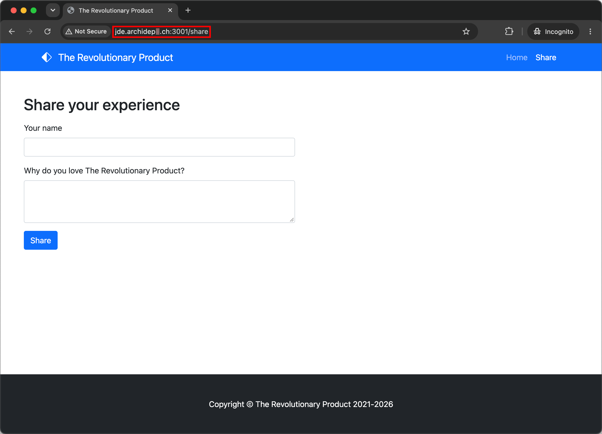
If you get a “Page Web Bloquée” page instead, the school’s network is blocking
your server. Your browser may also fail to connect if it tried https://
instead of http://. See The school’s network blocks your
server and Your browser cannot make a secure
connection.
Take the time to share your thoughts about The Revolutionary Product! Fill in your name and why you love it, and click Share.
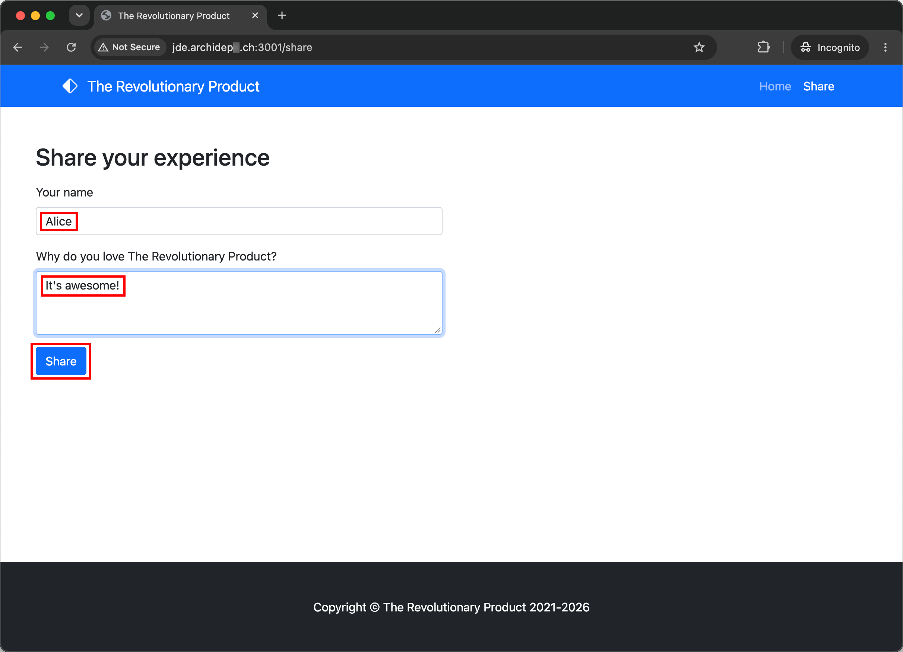
The backend stores the testimonials, and gives them to anyone who asks for them
at /comments, in the JSON format. Visit
http://jde.archidepN.ch:3001/comments to see yours:
[
{
"name": "Alice",
"text": "It's awesome!",
"date": "2026-11-26T10:14:35.785+00:00"
}
]Now you will click Home, in the navigation bar, or Close, on the page that thanked you for your testimonial. What do you think will happen, and why? Then click it.
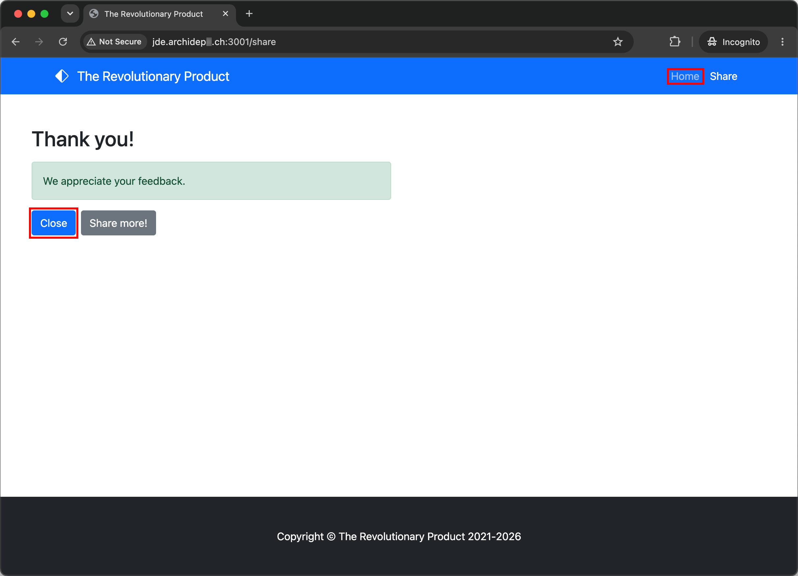
You end up on the form again, at /share.
Remember that Revprod is split in two. The home page is the landing page, built
by the other team: the backend does not have it. The backend’s
Home and Close links go to /
on the server they come from, which is the backend itself.
The backend team could have shown an error page there. Instead, the backend
redirects your browser from / to its form, the only
page it has.
Deploy the landing page
You will deploy the landing page the same way as the backend, with a directory, a user and a systemd service of its own, and then serve it through nginx.
Clone the landing page
Create a directory for the landing page in /srv, give it to yourself, and
clone the landing page’s repository into it:
$> sudo mkdir /srv/revprod-landing
$> sudo chown jde:jde /srv/revprod-landing
$> git clone https://github.com/ArchiDep/revprod-landing-page.git /srv/revprod-landingReplace jde with your username in the chown command.
There are no dependencies to install: the landing page uses only Python’s standard library.
Create a dedicated user for the landing page
Each component runs as a user of its own. Create one for the landing page, and give it the directory:
$> sudo useradd --system --shell /usr/sbin/nologin revprod-landing
$> sudo chown :revprod-landing /srv/revprod-landing
$> chmod 750 /srv/revprod-landing Run the landing page with systemd
Create a systemd unit file named /etc/systemd/system/revprod-landing.service
with sudo nano:
[Unit]
Description=Revprod landing page
[Service]
ExecStart=/usr/bin/python3 -m revprod_landing
WorkingDirectory=/srv/revprod-landing
User=revprod-landing
# Listen on the loopback address and on a port of its own.
Environment="REVPROD_LISTEN_HOST=127.0.0.1"
Environment="REVPROD_LISTEN_PORT=4300"
Restart=on-failure
[Install]
WantedBy=multi-user.targetpython3 -m revprod_landing runs the Python module named revprod_landing: the
code in the revprod_landing directory of the repository.
The landing page listens on the loopback address, 127.0.0.1, and
on a port that nobody outside the server needs to know: it will be reached only
through nginx, like Guess It and Brewscale.
Enable and start the service, and check that it is running:
$> sudo systemctl enable revprod-landing
$> sudo systemctl start revprod-landing
$> sudo systemctl status revprod-landing
● revprod-landing.service - Revprod landing page
Loaded: loaded (/etc/systemd/system/revprod-landing.service; enabled; preset: enabled)
Active: active (running) since Thu 2026-11-26 10:21:40 UTC; 2s ago
...
Nov 26 10:21:40 jde.archidep.ch python3[11603]: 2026-11-26 10:21:40,659 INFO [revprod_landing] Listening on 127.0.0.1:4300 Serve the landing page through nginx
Revprod is an nginx site of its own: revprod. followed by your hostname, for
example revprod.jde.archidepN.ch.
Create the nginx configuration file /etc/nginx/sites-available/revprod with
sudo nano:
server {
listen 80;
server_name revprod.jde.archidepN.ch;
# Forward every request to the landing page.
location / {
proxy_pass http://127.0.0.1:4300;
}
}Replace jde.archidepN.ch with your hostname in the server_name directive.
Enable it, then check and reload nginx’s configuration:
$> sudo ln -s /etc/nginx/sites-available/revprod /etc/nginx/sites-enabled/revprod
$> sudo nginx -t
nginx: the configuration file /etc/nginx/nginx.conf syntax is ok
nginx: configuration file /etc/nginx/nginx.conf test is successful
$> sudo systemctl reload nginx Try the landing page on its own
Visit Revprod in your browser, e.g. http://revprod.jde.archidepN.ch. You get
the landing page, in the same theme as the backend’s form.
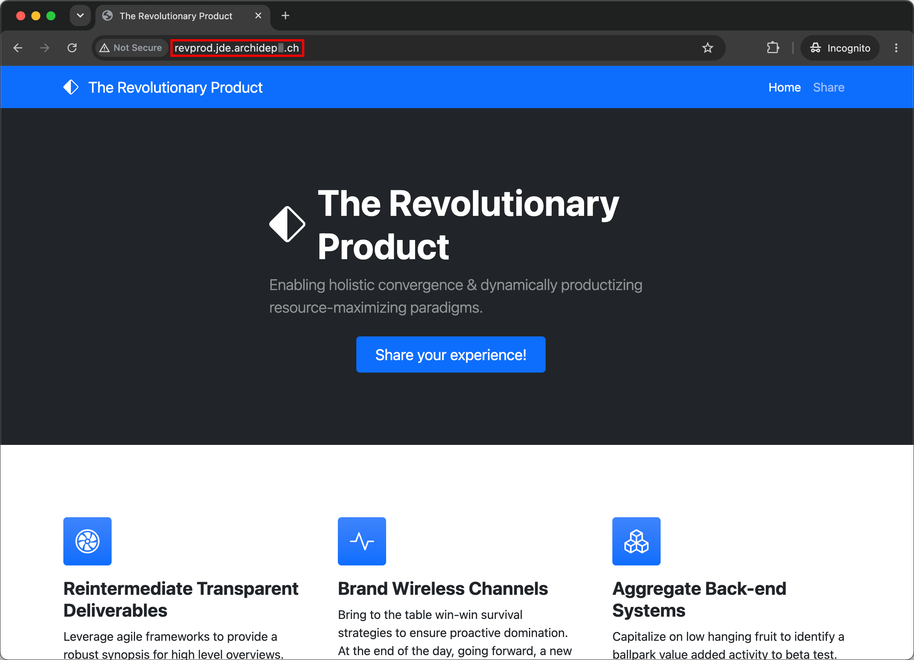
If you get a “Page Web Bloquée” page instead, the school’s network is blocking your server, as it may have blocked the backend. See The school’s network blocks your server.
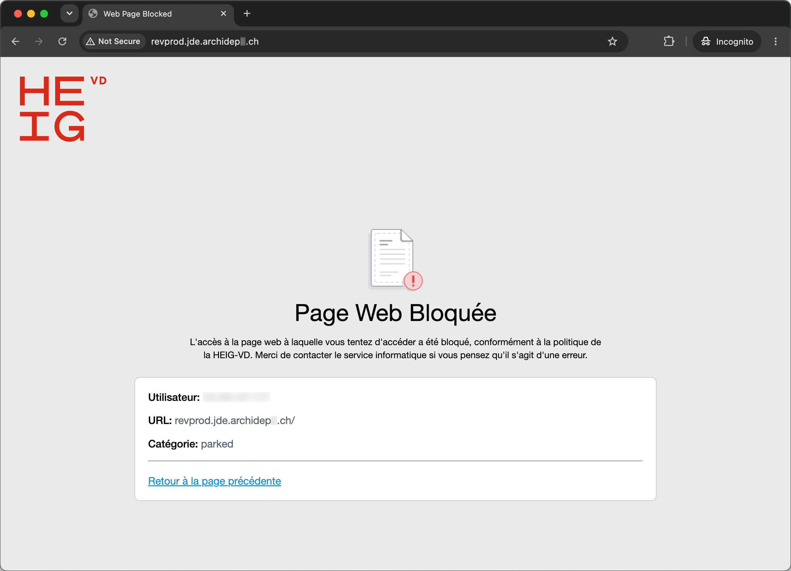
The top of the page works. But something is wrong further down. Scroll down to the testimonials: there are none, only an error message.
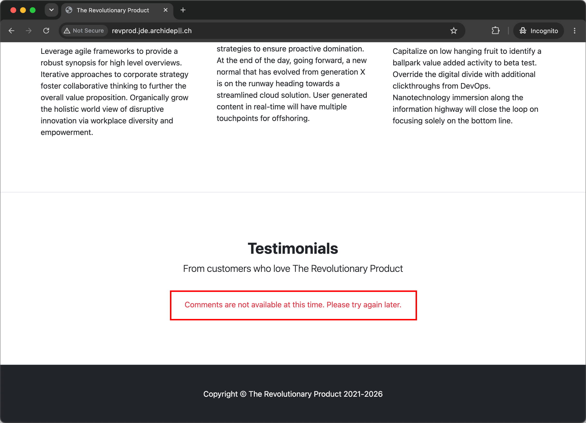
Now you will click Share, in the navigation bar, or Share your experience!. What do you think will happen, and why? And why are the testimonials missing? Then click it.
You end up on a “Not Found” page, at /share on the landing page’s site.
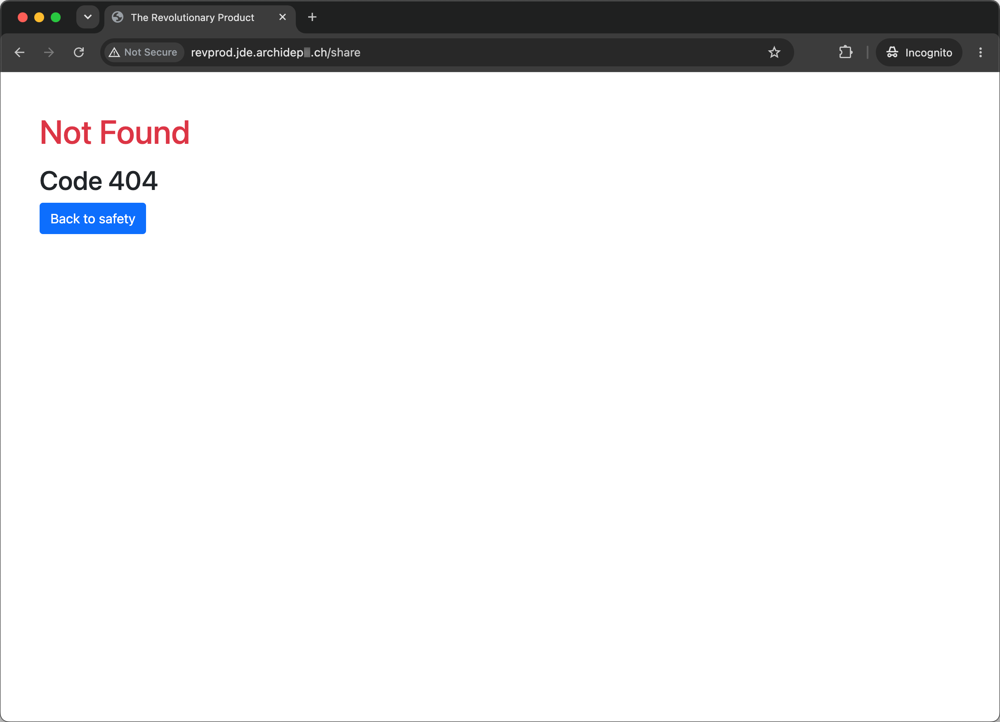
The landing page has no form. The form is the backend’s, built by the other
team. The landing page’s Share link goes to /share on the same site, which
the landing page does not have.
The testimonials are missing for the same reason. JavaScript code in the landing
page asks for them at /comments, on the same site. The landing page does not
have that either: the testimonials are stored by the backend.
Two halves of one application
Each team’s component runs, and each one is broken on its own:
- The backend’s home page sends you back to its form.
- The landing page has no testimonials, and its form does not exist.
Neither component works alone, because each one is half of the same application. To link to the other, each component must know where the other one is: its address on the web, which only whoever deploys them knows. That is configuration, so both components read it from an environment variable:
REVPROD_BACKEND_BASE_URLtells the landing page the address of the backend, where its Share links point, and where it fetches the testimonials.REVPROD_LANDING_PAGE_BASE_URLtells the backend the address of the landing page, where its Home and Close links point.
This is where the two components are at this point. It is only an intermediate
step, not the deployment you will end up with. The landing page is served
through nginx, at revprod.jde.archidepN.ch, while the browser reaches the
backend directly, at jde.archidepN.ch:3001. Step through the diagram to follow
what you have done so far, and see why the testimonials are missing.
This diagram shows an intermediate step of the exercise, not the final deployment. Each half of Revprod is reached at an address of its own. The browser reaches the backend directly, on port 3001. It reaches the landing page through nginx, at revprod.jde.archidep2.ch, which forwards the requests to port 4300. systemd, the init process, started all three.
systemd, the init process, started nginx when the server booted. nginx listens on port 80. Your wildcard DNS record, *.jde, points revprod.jde.archidep2.ch to your server’s public IP address.
You start the revprod-backend service: systemd starts the backend, as the revprod-backend user. The backend listens on port 3001, on every address of your server.
Someone opens a browser on their computer.
They type the backend’s address into the browser, with port 3001. The browser looks up jde.archidep2.ch in the DNS, which answers with your server’s public IP address.
The browser connects to port 3001 at your server’s public IP address, where the backend listens. Your server’s firewall lets this port through.
The browser asks the backend for its home page, at /, and waits for the answer.
The backend works. It has no home page: the home page is the landing page, built by the other team.
The backend answers with a redirect to its form, at /share, the only page it has.
The browser follows the redirect: it asks the backend for /share, over the same connection.
The backend sends back its form, which the browser displays.
You start the revprod-landing service: systemd starts the landing page, as the revprod-landing user. The landing page listens on port 4300, on the loopback address only. You enable Revprod’s nginx configuration, and reload nginx.
Someone types Revprod’s address into the browser, with no port. The browser looks up revprod.jde.archidep2.ch in the DNS, which answers with your server’s public IP address, from your wildcard record.
With no port in the address, the browser connects to port 80, the default port of HTTP, where nginx listens.
The browser asks nginx for the home page, at /, and waits for the answer.
nginx works: Revprod’s configuration forwards every request to http://127.0.0.1:4300, where the landing page listens.
nginx connects to the landing page on port 4300, at 127.0.0.1, the server’s own loopback address.
nginx sends the request on to the landing page, and waits for the answer.
The landing page works: Python runs its code, which builds the home page.
The home page travels back to nginx.
nginx sends the home page on to the browser.
The browser works: it displays the home page, and runs its JavaScript code, which asks for the testimonials at /comments, on the same site.
The browser sends the request for /comments to nginx, over the same connection, and waits for the answer.
nginx forwards every request of Revprod to the landing page, so it sends this one on too, and waits for the answer.
The landing page works. It has no testimonials: the testimonials are stored by the backend, built by the other team.
The landing page answers with the status code 404 Not Found: /comments does not exist.
nginx sends the answer on to the browser.
The browser displays an error message where the testimonials should be. The landing page does not know the backend’s address, so neither does its JavaScript code.
Link the components
Open the landing page’s unit file:
$> sudo nano /etc/systemd/system/revprod-landing.serviceAdd the address of the backend to its [Service] section, so that the file
looks like this:
[Unit]
Description=Revprod landing page
[Service]
ExecStart=/usr/bin/python3 -m revprod_landing
WorkingDirectory=/srv/revprod-landing
User=revprod-landing
# Listen on the loopback address and on a port of its own.
Environment="REVPROD_LISTEN_HOST=127.0.0.1"
Environment="REVPROD_LISTEN_PORT=4300"
# Public address of the backend.
Environment="REVPROD_BACKEND_BASE_URL=http://jde.archidepN.ch:3001"
Restart=on-failure
[Install]
WantedBy=multi-user.targetOpen the backend’s unit file:
$> sudo nano /etc/systemd/system/revprod-backend.serviceAdd the address of the landing page to its [Service] section, so that the
file looks like this:
[Unit]
Description=Revprod backend
[Service]
ExecStart=/usr/bin/node bin.js
WorkingDirectory=/srv/revprod-backend
User=revprod-backend
# Listen on port 3001, which your server's firewall lets through.
Environment="REVPROD_LISTEN_PORT=3001"
# Store the testimonials in a directory the backend may write to.
StateDirectory=revprod-backend
Environment="REVPROD_DB_FILE=/var/lib/revprod-backend/db.json"
# Public address of the landing page.
Environment="REVPROD_LANDING_PAGE_BASE_URL=http://revprod.jde.archidepN.ch"
Restart=on-failure
[Install]
WantedBy=multi-user.targetReplace jde.archidepN.ch with your hostname in both addresses.
Reload systemd’s configuration, and restart both services:
$> sudo systemctl daemon-reload
$> sudo systemctl restart revprod-landing
$> sudo systemctl restart revprod-backendVisit Revprod again, e.g. http://revprod.jde.archidepN.ch, and click
Share. You get the backend’s form. Click Home, and you are back on the
landing page. The links work, and both pages look the same, as the teams agreed.
But look at the address bar while you click. It goes from
revprod.jde.archidepN.ch to jde.archidepN.ch:3001, and back. Anyone who
looks at it sees two separate sites.
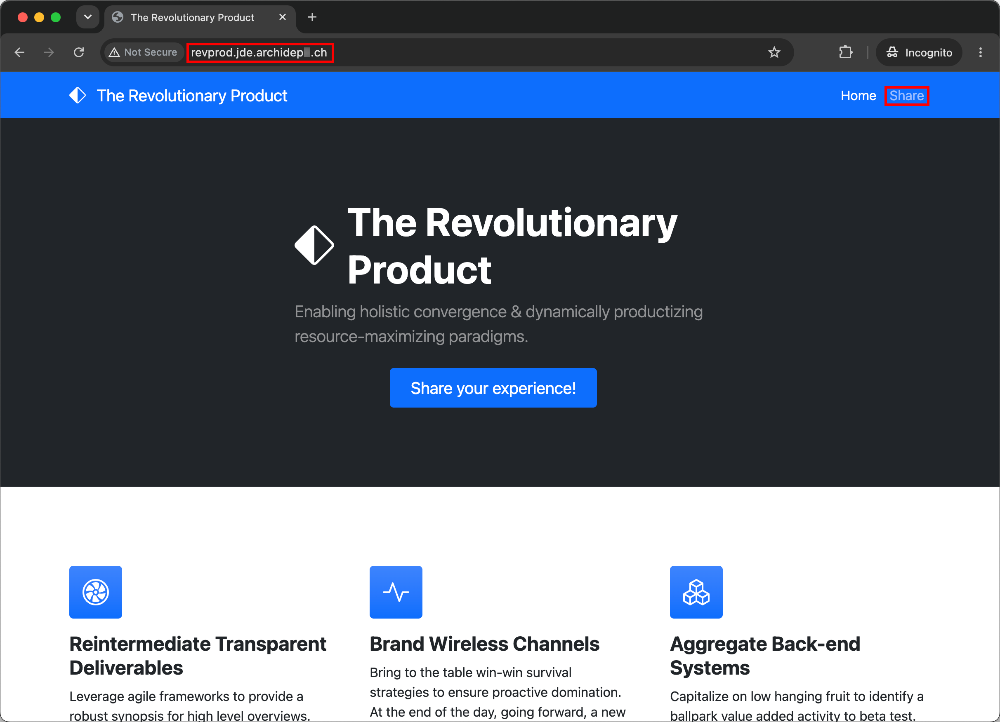
It’s not working!
Scroll down to the testimonials on the landing page. They are still missing!
Open your browser’s developer tools, and reload the page. Look at two places:
-
In the Network tab, the request to
commentshas failed: its status is CORS error. -
In the Console, you should see an error that looks something like this:
Access to fetch at 'http://jde.archidepN.ch:3001/comments' from origin 'http://revprod.jde.archidepN.ch' has been blocked by CORS policy: No 'Access-Control-Allow-Origin' header is present on the requested resource.
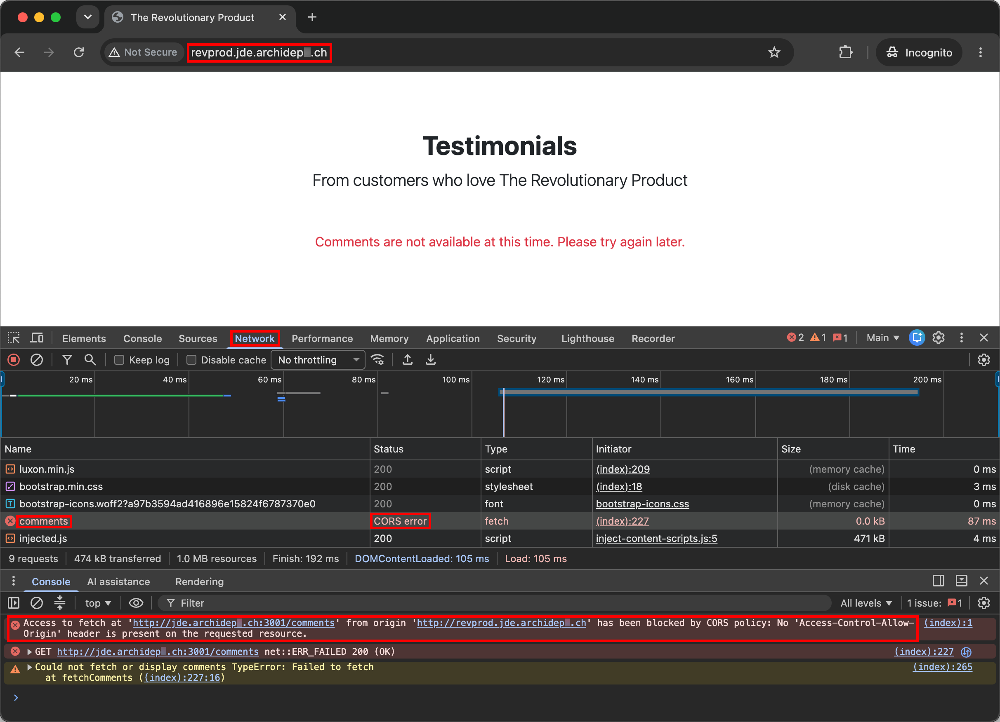
The landing page now asks the backend for the testimonials, at
http://jde.archidepN.ch:3001/comments. The backend answers: you can see the
request in its logs with sudo journalctl -u revprod-backend. But your browser
refuses to give the answer to the landing page’s JavaScript code.
The landing page and the testimonials come from two different origins. An
origin is the scheme, the host name and the port of an address. The landing page
comes from http://revprod.jde.archidepN.ch, and the testimonials from
http://jde.archidepN.ch:3001/comments:
| What | Scheme | Host | Port |
|---|---|---|---|
| Landing page | http |
revprod.jde.archidepN.ch |
80 |
| Testimonials | http |
jde.archidepN.ch |
3001 |
The landing page’s address has no port: port 80 is the default for http.
Two addresses have the same origin only if all three are the same. Here, both the host name and the port differ. Even with the same host name, the port alone would make it another origin.
Browsers apply the Same-Origin Policy (SOP): JavaScript code loaded from one origin may send requests to another, but may not read the answers, unless that other origin allows it. It is a critical security mechanism of the web.
The SOP helps isolate potentially malicious documents, reducing possible attack vectors. For example, it prevents a malicious website on the Internet from running JS in a browser to read data from a third-party webmail or e-banking service (which the user is signed into) or a company intranet (which is protected from direct access by the attacker by not having a public IP address) and relaying that data to the attacker.
There are two ways to solve this problem:
- The backend can tell browsers that the landing page’s origin may read its answers. This is Cross-Origin Resource Sharing (CORS). You will meet it in real life, and can try it in the next section.
- The two components can be made to share one origin. That is what a reverse proxy can do, and what the rest of this exercise does.
Optional: allow the landing page with CORS
Cross-Origin Resource Sharing (CORS) lets a server tell browsers which other origins may read its answers, with HTTP headers. The browser checks them, and gives the answer to the JavaScript code only if its origin is allowed.
The backend already supports sending these headers. Open its unit file:
$> sudo nano /etc/systemd/system/revprod-backend.serviceAdd the REVPROD_CORS and REVPROD_CORS_ORIGINS
variables to its [Service] section, so that the file
looks like this:
[Unit]
Description=Revprod backend
[Service]
ExecStart=/usr/bin/node bin.js
WorkingDirectory=/srv/revprod-backend
User=revprod-backend
# Listen on port 3001, which your server's firewall lets through.
Environment="REVPROD_LISTEN_PORT=3001"
# Store the testimonials in a directory the backend may write to.
StateDirectory=revprod-backend
Environment="REVPROD_DB_FILE=/var/lib/revprod-backend/db.json"
# Public address of the landing page.
Environment="REVPROD_LANDING_PAGE_BASE_URL=http://revprod.jde.archidepN.ch"
# Allow the landing page to read the backend's answers.
Environment="REVPROD_CORS=true"
Environment="REVPROD_CORS_ORIGINS=http://revprod.jde.archidepN.ch"
Restart=on-failure
[Install]
WantedBy=multi-user.targetReplace jde.archidepN.ch with your hostname in the origin.
Reload systemd’s configuration and restart the backend:
$> sudo systemctl daemon-reload
$> sudo systemctl restart revprod-backendReload the landing page. The testimonials appear!
In the developer tools, open the Network tab, reload the page again, and
click the request to comments. Among the headers of the response, the backend
now sends this one:
Access-Control-Allow-Origin: http://revprod.jde.archidepN.chYour browser compares it with the origin of the landing page. They match, so it gives the answer to the landing page’s code.
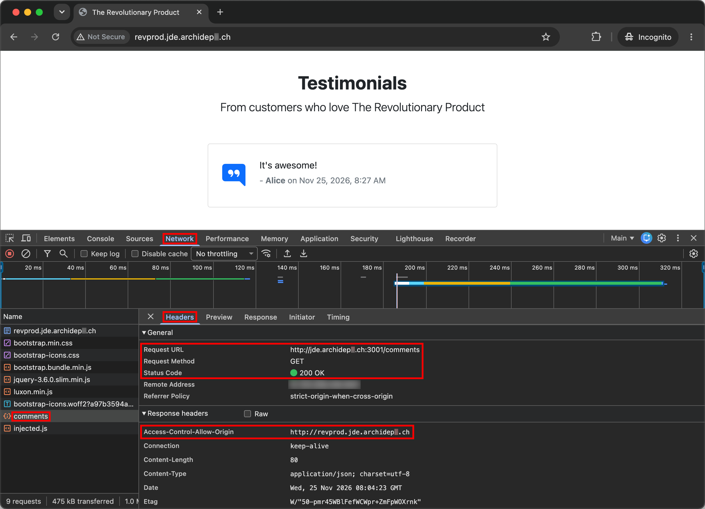
Notice that it is the backend that had to be changed, to allow the landing page: the backend team must know every origin that the landing page is served from, and allow each one. If the landing page moved to another address, the testimonials would break again until the backend’s configuration followed.
Before you continue, you must turn CORS off again, so that you can see the reverse proxy solve the problem by itself. Open the backend’s unit file again:
$> sudo nano /etc/systemd/system/revprod-backend.serviceComment out the two CORS lines, by adding a # at the start of each one, so
that the file looks like this:
[Unit]
Description=Revprod backend
[Service]
ExecStart=/usr/bin/node bin.js
WorkingDirectory=/srv/revprod-backend
User=revprod-backend
# Listen on port 3001, which your server's firewall lets through.
Environment="REVPROD_LISTEN_PORT=3001"
# Store the testimonials in a directory the backend may write to.
StateDirectory=revprod-backend
Environment="REVPROD_DB_FILE=/var/lib/revprod-backend/db.json"
# Public address of the landing page.
Environment="REVPROD_LANDING_PAGE_BASE_URL=http://revprod.jde.archidepN.ch"
# Allow the landing page to read the backend's answers (turned off).
#Environment="REVPROD_CORS=true"
#Environment="REVPROD_CORS_ORIGINS=http://revprod.jde.archidepN.ch"
Restart=on-failure
[Install]
WantedBy=multi-user.targetReload systemd’s configuration and restart the backend:
$> sudo systemctl daemon-reload
$> sudo systemctl restart revprod-backendReload the landing page, holding the Shift key to force a refresh so that your browser does not reuse what it has kept. The testimonials are missing again:
The testimonials must be missing at this point, before you move on to the next step. This is the state you want: the next step solves the problem in another way, and you could not see it work if CORS still did.
If the testimonials are still displayed, check that you commented out both CORS lines, reloaded systemd’s configuration and restarted the backend, then reload the page holding the Shift key again.
Serve both components as a single site
The two components are reached at two origins, revprod.jde.archidepN.ch and
jde.archidepN.ch:3001. That is the source of the problem you just saw. But
what if there was only one origin?
nginx already serves the landing page at revprod.jde.archidepN.ch, with one
location block that forwards every request to it. But a server block can
have several location blocks, and forward each one to a different component,
depending on the path of the request.
The backend answers three kinds of requests:
/share, its form, which also receives the testimonials it stores./comments, the testimonials.- Paths starting with
/css/, the stylesheet of its form.
This step is not written down for you: you must work out yourself what to add to nginx’s configuration.
Open Revprod’s nginx configuration:
$> sudo nano /etc/nginx/sites-available/revprodIt is the file you wrote earlier in this exercise, with a TODO where your changes go:
server {
listen 80;
server_name revprod.jde.archidepN.ch;
# Forward every request to the landing page.
location / {
proxy_pass http://127.0.0.1:4300;
}
# TODO: forward the requests for the backend's paths to the backend.
}Replace the TODO comment with what makes nginx forward the requests for the
backend’s paths to the backend, at 127.0.0.1:3001. Every other request must
still go to the landing page, as before, and the file must still have only
one server block.
The reverse proxy subject explains how nginx chooses a
location block for a request. The “Setting Up a Simple Proxy
Server” section of nginx’s beginner’s guide shows
an example of a server block with several location blocks.
Do not copy that example as it is: it is not Revprod. Once you have several
location blocks, think through which requests each one matches, and where
they must lead. When in doubt, browse the reference deployment and
look at the path of each page in the address bar.
Check and reload nginx’s configuration:
$> sudo nginx -t
$> sudo systemctl reload nginxBoth components are now reached at revprod.jde.archidepN.ch, so neither needs
the address of the other any more: a link to /share or / on the same site
reaches the right component through nginx. Without the addresses, each
component links to paths on its own site, as when you first tried it alone.
Open the landing page’s unit file:
$> sudo nano /etc/systemd/system/revprod-landing.serviceComment out the REVPROD_BACKEND_BASE_URL line, by adding a # at its start,
so that the file looks like this:
[Unit]
Description=Revprod landing page
[Service]
ExecStart=/usr/bin/python3 -m revprod_landing
WorkingDirectory=/srv/revprod-landing
User=revprod-landing
# Listen on the loopback address and on a port of its own.
Environment="REVPROD_LISTEN_HOST=127.0.0.1"
Environment="REVPROD_LISTEN_PORT=4300"
# Public address of the backend (not needed behind a single site).
#Environment="REVPROD_BACKEND_BASE_URL=http://jde.archidepN.ch:3001"
Restart=on-failure
[Install]
WantedBy=multi-user.targetOpen the backend’s unit file:
$> sudo nano /etc/systemd/system/revprod-backend.serviceComment out the REVPROD_LANDING_PAGE_BASE_URL line the same way, so that the
file looks like this:
[Unit]
Description=Revprod backend
[Service]
ExecStart=/usr/bin/node bin.js
WorkingDirectory=/srv/revprod-backend
User=revprod-backend
# Listen on port 3001, which your server's firewall lets through.
Environment="REVPROD_LISTEN_PORT=3001"
# Store the testimonials in a directory the backend may write to.
StateDirectory=revprod-backend
Environment="REVPROD_DB_FILE=/var/lib/revprod-backend/db.json"
# Public address of the landing page (not needed behind a single site).
#Environment="REVPROD_LANDING_PAGE_BASE_URL=http://revprod.jde.archidepN.ch"
Restart=on-failure
[Install]
WantedBy=multi-user.targetReload systemd’s configuration, and restart both services:
$> sudo systemctl daemon-reload
$> sudo systemctl restart revprod-landing
$> sudo systemctl restart revprod-backendVisit Revprod again, e.g. http://revprod.jde.archidepN.ch, and click
Share. You get the backend’s form. Click Home, and you are back on the
landing page. This time, the address stays revprod.jde.archidepN.ch while you
go from one component to the other.
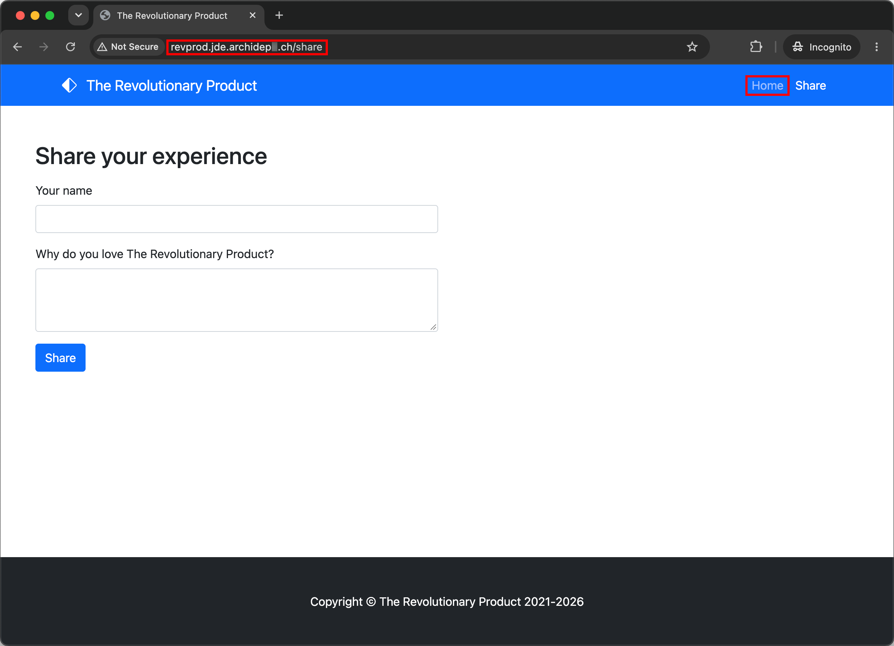
Your browser sends every request to nginx, at one origin. nginx forwards each one internally to one component or the other. Neither the browser nor the user can tell that the application is made of two components.
Click Share again, and share another testimonial, through Revprod’s own address this time:
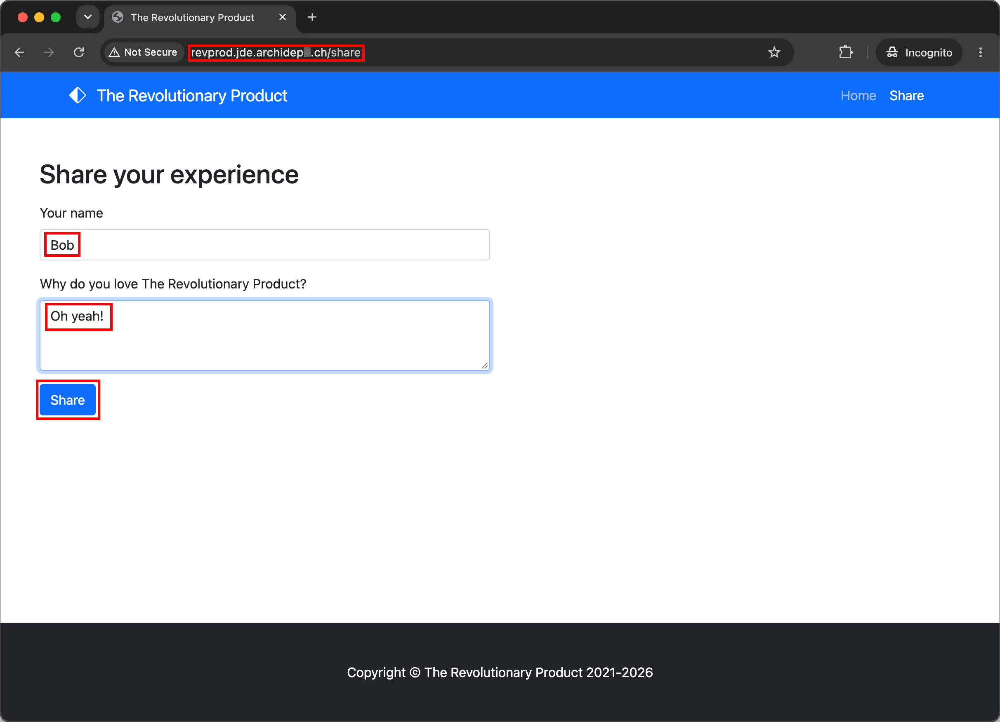
Click Close, and scroll down to the testimonials on the landing page. Yours is displayed, with the earlier ones.
Open your browser’s developer tools, reload the page, and click the request to
comments in the Network tab. It went to
http://revprod.jde.archidepN.ch/comments, the same origin as the landing page.
There is no cross-origin request any more, so the same-origin policy has nothing
to refuse: the answer has no Access-Control-Allow-Origin header, and needs
none. The Console shows no error either.
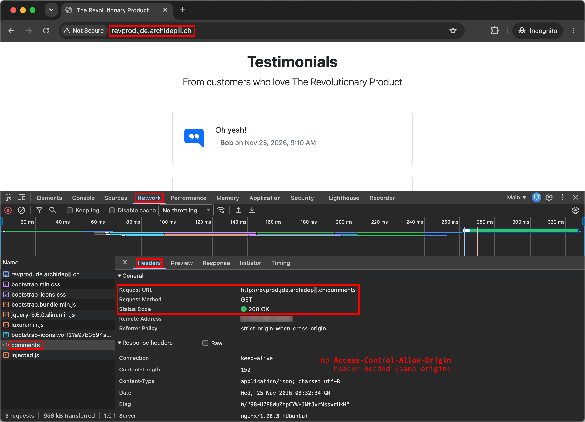
Note
If you reload the page more than once, the status of the request to comments
may be 304 Not Modified instead of 200 OK. This is normal: your browser
already has the testimonials from the last time it loaded the page, and the
server tells it that they have not changed since.
Hide the backend’s port
The backend still listens on port 3001, on every address of your server, so
anyone can still reach it at http://jde.archidepN.ch:3001. Nothing needs this
any more: browsers reach the backend through nginx. Your server’s firewall lets
only a few ports through, and port 3001 is better kept free for later.
Move the backend to a port that nobody outside the server needs to know, on the loopback address. Open its unit file:
$> sudo nano /etc/systemd/system/revprod-backend.serviceChange the port from 3001 to 4301, add the REVPROD_LISTEN_HOST variable, and
change the comment above them, so that the file looks like this:
[Unit]
Description=Revprod backend
[Service]
ExecStart=/usr/bin/node bin.js
WorkingDirectory=/srv/revprod-backend
User=revprod-backend
# Listen on the loopback address and on a port of its own.
Environment="REVPROD_LISTEN_HOST=127.0.0.1"
Environment="REVPROD_LISTEN_PORT=4301"
# Store the testimonials in a directory the backend may write to.
StateDirectory=revprod-backend
Environment="REVPROD_DB_FILE=/var/lib/revprod-backend/db.json"
# Public address of the landing page (not needed behind a single site).
#Environment="REVPROD_LANDING_PAGE_BASE_URL=http://revprod.jde.archidepN.ch"
Restart=on-failure
[Install]
WantedBy=multi-user.targetReload systemd’s configuration and restart the backend:
$> sudo systemctl daemon-reload
$> sudo systemctl restart revprod-backendThe backend now listens on port 4301, but nginx still forwards the requests for
its paths to port 3001, where nothing listens any more. Visit
http://revprod.jde.archidepN.ch/share: nginx answers with an error page,
502 Bad Gateway.
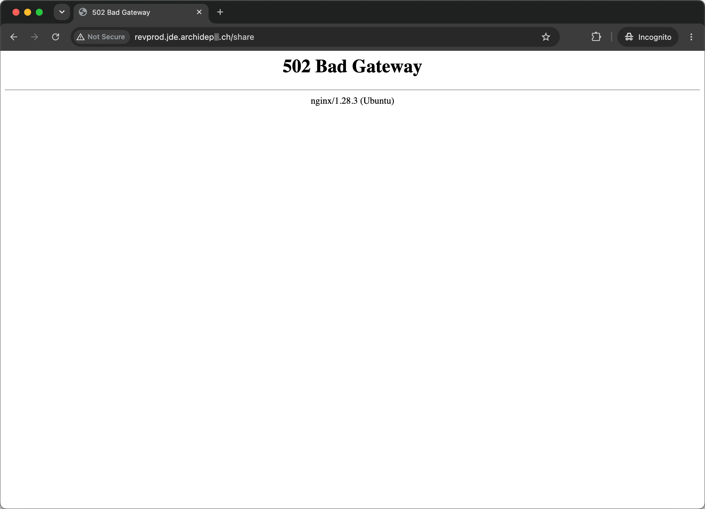
nginx stands between your browser and the components, as a gateway to them. It received your request, but got no answer from the component it forwards that request to. The landing page still works, because its port has not changed.
This is what you should see at this point. nginx’s error log says why. Show the last line of the log that mentions port 3001:
$> sudo grep 3001 /var/log/nginx/error.log | tail -n 1
# Note: this will be one long line with no breaks in nginx's logs.
2026/11/26 10:40:39 [error] 11021#11021: *67 connect() failed
(111: Connection refused) while connecting to upstream,
client: A.B.C.D, server: revprod.jde.archidepN.ch,
request: "GET /share HTTP/1.1",
upstream: "http://127.0.0.1:3001/share",
host: "revprod.jde.archidepN.ch",
referrer: "http://revprod.jde.archidepN.ch/"nginx tried to connect to the backend at its old address, 127.0.0.1:3001,
which it calls the upstream, and the connection was refused: nothing listens
there.
To fix it, open Revprod’s nginx configuration:
$> sudo nano /etc/nginx/sites-available/revprodChange every proxy_pass directive that forwards to the backend, from
http://127.0.0.1:3001 to http://127.0.0.1:4301, in what you added to the
file in the previous step:
server {
listen 80;
server_name revprod.jde.archidepN.ch;
# Forward every request to the landing page.
location / {
proxy_pass http://127.0.0.1:4300;
}
# What you added for the backend's paths:
# change the port from 3001 to 4301.
}Check and reload nginx’s configuration:
$> sudo nginx -t
$> sudo systemctl reload nginxVisit http://jde.archidepN.ch:3001: your browser can no longer connect to it.
The backend listens only on the loopback address now, and nothing listens on
port 3001 any more.
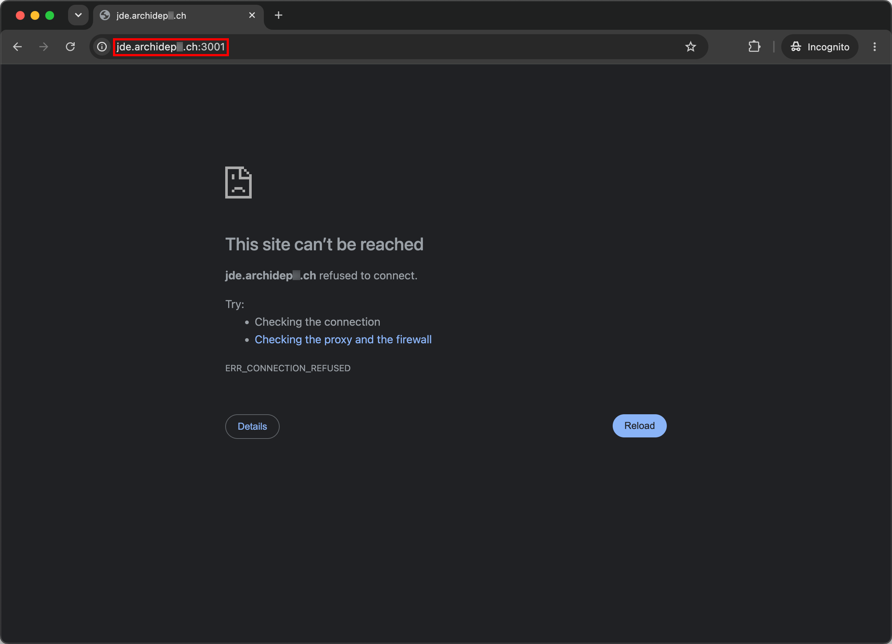
Visit Revprod at http://revprod.jde.archidepN.ch: it works as before. Share
another testimonial to make sure.
The backend’s port changed, and no browser noticed. Behind a reverse proxy, the port of each component is an internal detail of your server, which you can change without anyone outside knowing.
What have I done?
You have deployed an application made of two components, developed by two teams, in two languages, and made them appear to the outside world as a single website.
Each component is a separate program, run by systemd as a process of its own, with a user of its own. They can be deployed and restarted separately, and they could be updated separately by their teams.
Neither component worked alone. The landing page had no form and no testimonials, and the backend had no home page: each was half of the same application. To link to each other, each needed the address of the other, which only whoever deploys them knows. That is configuration, given to each component in an environment variable.
Once linked, the application worked, but a user could see it was two sites, and the testimonials were missing. An origin is the scheme, the host name and the port of an address. The landing page and the backend had two different origins, and the same-origin policy of browsers stops a page’s JavaScript code from reading what another origin answers, unless that origin allows it. The backend did answer: it is the browser that refused to hand over the answer.
(Optionally) You let the backend allow the landing page’s origin, with CORS: HTTP headers that the browser checks. It works, but the backend must then know every origin the landing page is served from.
A reverse proxy solves it another way. nginx can choose where to forward a
request by its path, not only by its name: /share, /comments and /css/
go to the backend, everything else to the landing page. The browser talks to a
single origin, so there is no cross-origin request left. Neither component
needs the other’s address any more: a link to /share is enough.
Behind the reverse proxy, a component’s port is an internal detail. You moved the backend to another port, on the loopback address, and only nginx had to know.
Architecture
This is a simplified architecture of the main running processes and communication flow at the end of this exercise. Unlike in the middle of the exercise, the browser talks only to nginx, which forwards each request to one component or the other by its path. Step through the diagram to see what happens when a browser loads Revprod’s home page and its testimonials.
In this diagram, a browser reaches both halves of Revprod at a single address, revprod.jde.archidep2.ch. nginx listens on port 80, and forwards each request by its path: to the backend on port 4301 for /share, /comments and /css/, to the landing page on port 4300 for everything else. systemd, the init process, started all three when the server booted.
systemd, the init process, started nginx, the landing page and the backend when the server booted. nginx listens on port 80. The landing page listens on port 4300 and the backend on port 4301, both on the loopback address only. Your wildcard DNS record, *.jde, points revprod.jde.archidep2.ch to your server’s public IP address.
Someone opens a browser on their computer.
They type Revprod’s address into the browser, with no port. The browser looks up revprod.jde.archidep2.ch in the DNS, which answers with your server’s public IP address, from your wildcard record.
With no port in the address, the browser connects to port 80, the default port of HTTP, where nginx listens.
The browser asks nginx for the home page, at /, and waits for the answer.
nginx works: in Revprod’s configuration, the path / matches only location /, which forwards it to http://127.0.0.1:4300, where the landing page listens.
nginx connects to the landing page on port 4300, at 127.0.0.1, the server’s own loopback address.
nginx sends the request on to the landing page, and waits for the answer.
The landing page works: Python runs its code, which builds the home page.
The home page travels back to nginx.
nginx sends the home page on to the browser.
The browser works: it displays the home page, and runs its JavaScript code, which asks for the testimonials at /comments, on the same site.
The browser sends the request for /comments to nginx, over the same connection, and waits for the answer.
nginx works: the path /comments matches both location / and location /comments. nginx chooses the longest, which forwards it to http://127.0.0.1:4301, where the backend listens.
nginx connects to the backend on port 4301, at 127.0.0.1, the server’s own loopback address.
nginx sends the request on to the backend, and waits for the answer.
The backend works: Node.js runs its JavaScript code, which reads the testimonials it stores.
The testimonials travel back to nginx, in the JSON format.
nginx sends the testimonials on to the browser. They came from revprod.jde.archidep2.ch, like the home page: the browser never talked directly to the backend.
The browser works: the home page and the testimonials have the same origin, so it gives the testimonials to the home page’s JavaScript code, which displays them.
Note
Note that this diagram simplifies nginx by showing only one process, while in reality it has a master process and several worker processes, but this is sufficient to understand the architecture.
 Where is everything?
Where is everything?
These are the files and directories of your server that matter for this deployment.
| Path | What it is | What you did | Who uses it |
|---|---|---|---|
/srv/revprod-backend new |
The backend’s deployment: a clone of its repository, with its dependencies | Created it with sudo mkdir, cloned the repository into it, installed its dependencies with npm ci |
You, to update it. The revprod-backend user reads it |
/srv/revprod-landing new |
The landing page’s deployment: a clone of its repository | Created it with sudo mkdir, and cloned the repository into it |
You, to update it. The revprod-landing user reads it |
/etc/systemd/system/revprod-backend.service new |
The unit file of the backend: how to run it, and its configuration | Wrote it with sudo nano, linked it to the landing page, then commented out the link and changed its port |
systemd, to run the backend |
/etc/systemd/system/revprod-landing.service new |
The unit file of the landing page: how to run it, and its configuration | Wrote it with sudo nano, linked it to the backend, then commented out the link |
systemd, to run the landing page with python3 |
/var/lib/revprod-backend new |
The backend’s data: db.json, the testimonials |
Nothing: systemd created it for the backend, as StateDirectory says |
The backend, to store and read the testimonials |
/etc/nginx/sites-available/revprod new |
The configuration of Revprod: its name, and which component gets which path | Wrote it with sudo nano, then added the backend’s locations, and changed their port |
nginx, through its link in sites-enabled |
/etc/passwd changed |
The list of the server’s Unix users | Ran useradd twice, which added the revprod-backend and revprod-landing users |
systemd, to find the users that run the components |
You can explore all of this yourself: ls -l shows what a directory contains,
with its permissions, and cat, head and tail what a file contains, as in
the command line cheatsheet. Use sudo for what only
root can read. For example:
# The testimonials, and who owns the file they are in.
$> sudo ls -l /var/lib/revprod-backend
$> sudo cat /var/lib/revprod-backend/db.json
# What each component has logged (press q to quit).
$> sudo journalctl -u revprod-landing
$> sudo journalctl -u revprod-backend Troubleshooting
Here’s a few tips about some problems you may encounter during this exercise.
The school’s network blocks your server
The school’s network filters the web pages you visit, and may block names it
does not know, such as your server’s. You then get a “Page Web Bloquée” page
from HEIG-VD instead of Revprod, whether at port 3001 or at
revprod.jde.archidepN.ch.
Your server is not at fault: the block is between your computer and it. Use another network for this exercise, for example by sharing your phone’s connection (hotspot), or through a VPN.
Your browser cannot make a secure connection
Revprod’s components speak only HTTP in this exercise: the backend at port
3001, and nginx for revprod.jde.archidepN.ch. Some browsers try https://
first when you type an address without it. Check the address bar: the address
must start with http://. Type it in full, with http://.
- At port 3001, the backend does not understand an HTTPS request at all, and
your browser shows an error such as
ERR_SSL_PROTOCOL_ERROR. - At
revprod.jde.archidepN.ch, nginx does answer HTTPS on port 443, for the sites you obtained a certificate for in the Certbot exercise, but it has no certificate for Revprod. Your browser warns you that the certificate is not valid for that name. Do not go past the warning: you would get one of your other sites, not Revprod.
[emerg] could not build server_names_hash, you should increase server_names_hash_bucket_size
Your domain name is too long for nginx’s default settings. Fix it as in the same problem in the static site exercise.
EACCES: permission denied, open '/srv/revprod-backend/db.json'
The backend shows this error when you share a testimonial. It tried to store
the testimonials in its own directory, which the revprod-backend user may not
write to. Check that its unit file has both the StateDirectory option and the
REVPROD_DB_FILE variable, as in Run the backend with
systemd, then reload systemd’s configuration and restart the
backend.
Port 3001 is already in use
A component does not start, and its logs say that its port, here 3001, is
already in use: another process listens on it. Find which one with sudo ss -tlpn, as in the SFTP exercise, and stop it, or give the component
another port.
502 Bad Gateway
nginx received the request, but could not get an answer from the component it forwards it to. Look at the end of nginx’s error log:
$> sudo tail /var/log/nginx/error.logIf it says connect() failed (111: Connection refused) while connecting to upstream, it also says which upstream address nothing listens on:
- Check that both components are running with
sudo systemctl status revprod-landingandsudo systemctl status revprod-backend, and that the last line of each one’s logs says it listens on the port you expect. - Check that each
proxy_passdirective has the port of the component it forwards to.
The testimonials are still missing behind a single site
Check that:
- Your nginx configuration has a
locationfor/comments, and you have reloaded nginx since you changed it. - The
REVPROD_BACKEND_BASE_URLline of the landing page’s unit file is commented out, and you have reloaded systemd’s configuration and restarted the landing page since you changed it. Its logs sayBackend base URL: nonewhen it starts. - Your browser is not showing an old copy of the page: reload it holding the Shift key to force a refresh.
The footer covers the form
The backend’s form is missing its stylesheet: nginx forwards the requests for it
to the landing page, which does not have it. Check that your nginx configuration
has a location for /css/ that forwards to the backend.